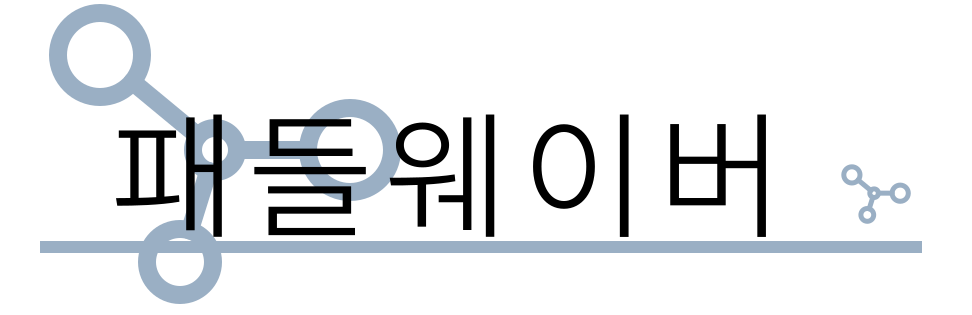
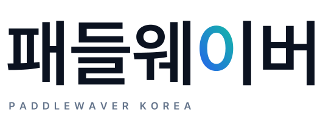
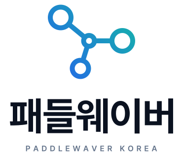
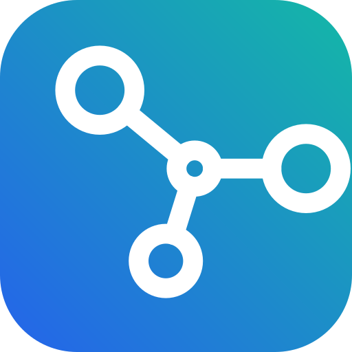

패들웨이버 한글 BI 시안
본사 심볼(원 4개가 이어진 노드)을 유지하고, 한글 워드마크를 붙인 4가지 방향입니다. 한글 서체는 Pretendard(SIL OFL, 상업 사용 가능)를 윤곽선으로 변환해 폰트 없이도 똑같이 보입니다.
A
본사 로고 한글화
구성·색을 그대로 유지본사 로고의 회청색 심볼, 가는 글자, 밑줄 바를 그대로 두고 영문만 한글로 바꿨습니다. 본사와 가장 일관되지만, 한글은 획이 많아 심볼과 겹치는 부분이 읽기 어렵습니다.

오른쪽은 비교용 본사 로고 · bi-a.svg

B
가로형 워드마크
추천 · 웹사이트 헤더용심볼을 겹치지 않게 왼쪽에 두고 블루→청록 그라디언트를 입혔습니다. 굵은 한글과 작은 영문(PADDLEWAVER KOREA)을 같이 써서 작은 크기에서도 잘 읽힙니다. 시안 1·3의 색과 같습니다.
위: 헤더에 넣었을 때 · bi-b.svg bi-b-white.svg


C
시그니처 워드마크
글자만으로 기억되는 로고'이'의 ㅇ을 심볼의 동그라미처럼 그라디언트로 칠했습니다. 심볼 없이 글자만으로도 브랜드가 드러나서 배너·영상 자막·굿즈처럼 공간이 좁은 곳에 좋습니다.




D
세로형 · 앱 아이콘
명함, SNS 프로필, 파비콘B안을 세로로 쌓은 버전과, 심볼만 쓴 정사각 아이콘입니다. B안과 함께 한 세트로 쓰는 것을 전제로 했습니다.




확정 전 확인할 것
- 본사 승인: 심볼 색(회청색 → 블루·청록) 변경과 한글 표기 '패들웨이버'를 본사가 허용하는지 확인이 필요합니다.
- 상표: 한글 워드마크를 쓰려면 한국 특허청 상표 출원(국문·영문 병기)을 검토하세요.
- 원본 심볼: 본사 로고는 이미지(PNG)를 감싼 SVG라서 심볼은 벡터로 다시 그렸습니다. 본사에 원본 벡터(AI/SVG) 파일을 요청하면 더 정확해집니다.